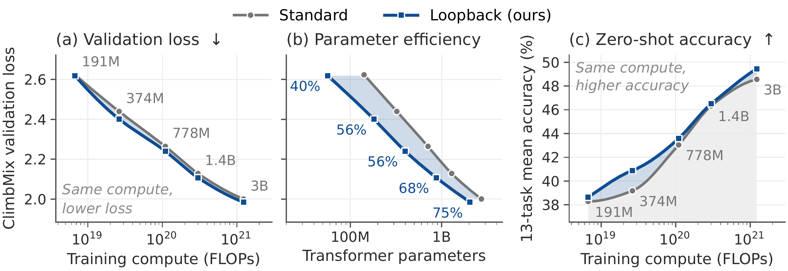
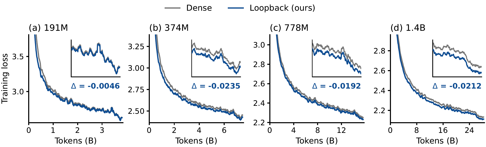
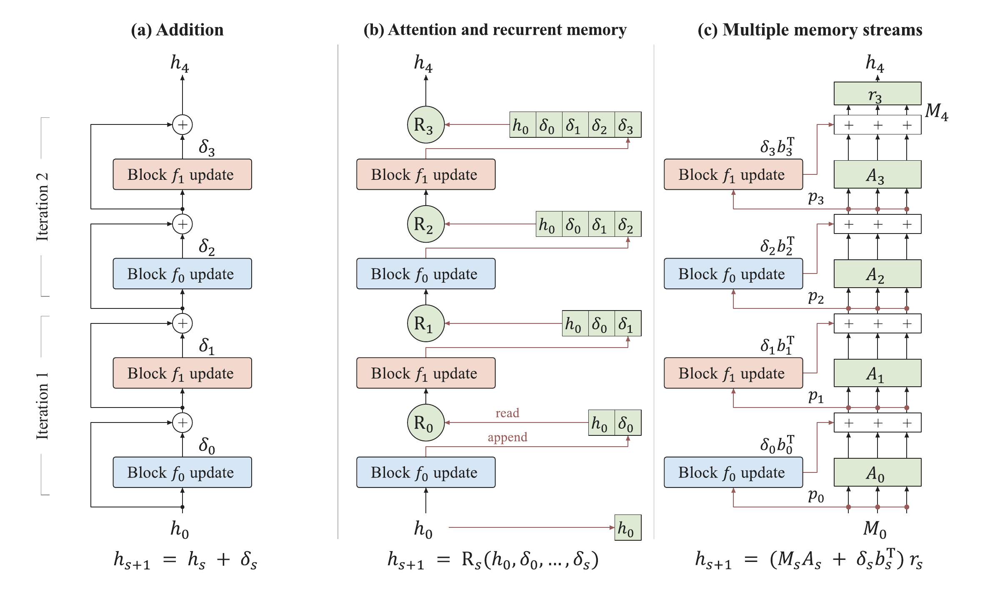
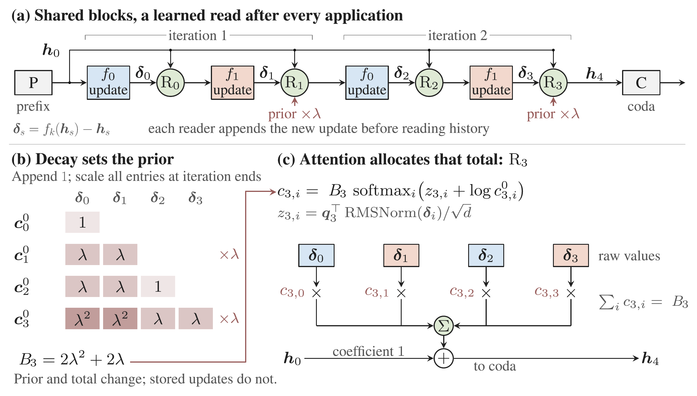
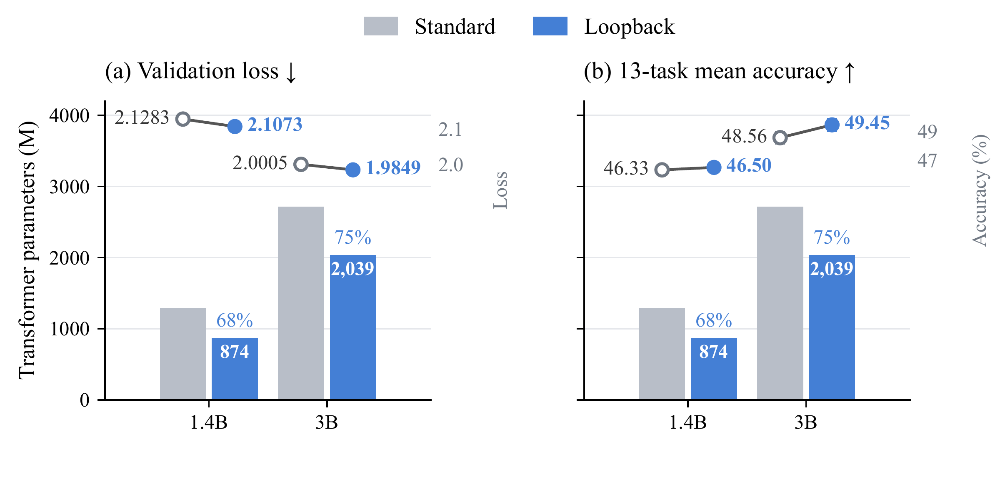
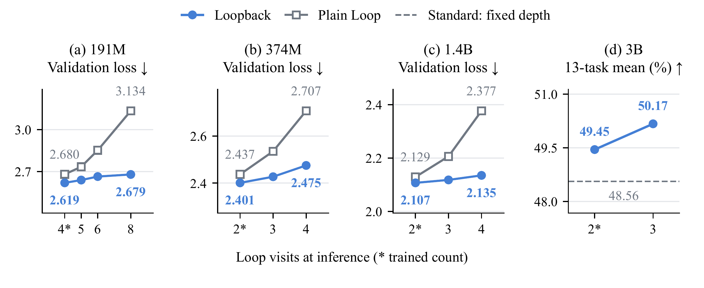
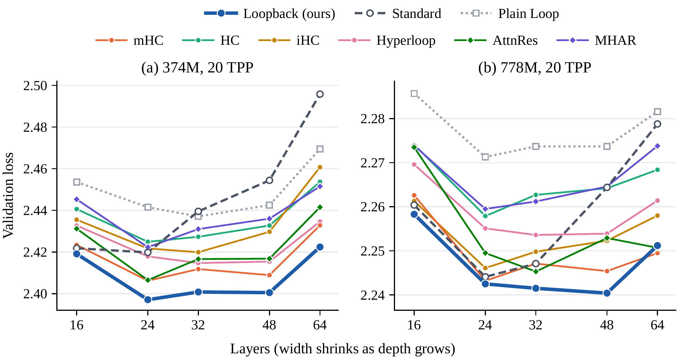
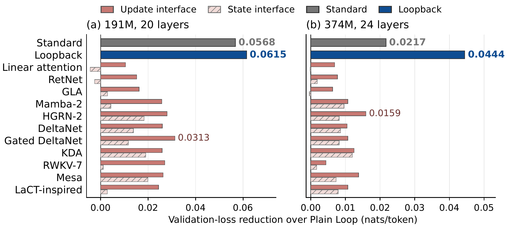

Decay sets the prior (symbols): append 1, scale all entries by λ at iteration ends; one iteration’s updates share a weight and B stays below Kλ/(1−λ) = 2/3. Attention allocates that total (numbers; illustrative scores): cs = Bs softmax(zs + log c0s), so updates can differ while every Bs stays the same.
Loopback in 2:14. The memory view behind the design, how residual addition, Hyper-Connections and Attention Residuals set the same three quantities, what Loopback changes, the training curves at five scales, the main results and the depth sweep, narrated and captioned.
40–75%of the standard Transformer’s Transformer parameters: 56.65 vs 141.59M at 191M, 2,038.58 vs 2,718.06M at 3B
5 of 5scales with lower ClimbMix validation loss: −0.005, −0.039, −0.024, −0.021, −0.016 from 191M to 3B
+0.17–1.71points on the thirteen-task zero-shot mean at all five scales, from 46.50 vs 46.33 at 1.4B to 40.89 vs 39.18 at 374M
1st of 9designs at 191M, 374M and 778M: lowest loss and highest thirteen-task mean against Standard, Plain Loop, mHC, HC, iHC, Hyperloop, MHAR and AttnRes
01 Overview
Performance overview
At the same training tokens and executed depth, Loopback reaches lower validation loss than the standard Transformer from 191M to 3B, with 40–75% of its Transformer parameters.
Figure 1 · Matched compute, 191M to 3B

Lower loss and higher accuracy with fewer parameters, from 191M to 3B. Each pair uses the same token budget and executed depth at the 20-TPP setting (20 tokens per reference-model parameter; 3.82B tokens at 191M). (a) Validation loss and (c) thirteen-task mean accuracy against the standard Transformer’s estimated training FLOPs; (b) the same losses against Transformer parameters, where percentages give Loopback’s share of the standard Transformer’s. 374M and 778M are the 32- and 48-layer shapes of Table 1. Lines interpolate the points; no scaling law is fitted.
Figure 2 · Training loss, five scales

Loopback trains below the standard Transformer at every scale. 100-step moving averages against tokens seen; insets show the last quarter of training, and Δ is the final training-loss difference over the last 100 steps. Loopback stores 40–75% of the standard Transformer’s Transformer parameters.
02 Abstract
Abstract
Looped Transformers reduce parameter count by repeatedly applying shared blocks, but parameter sharing alone does not determine how the results of repeated computation are reused. We take the depth-memory view of residual connections and analyze which representation is stored after each block application and how later reads weight it. A full block output contains both its input and its new update, so weighting that output also reweights the history already carried by the input. Reading individual updates instead, with the shared stack’s input kept on a separate path, gives separate controls over input strength, total update weight, and allocation across updates. The Loopback Transformer implements these controls: geometric decay sets the total update weight and supplies a recency prior, and attention learns how to allocate that weight. On ClimbMix, Loopback reaches lower validation loss than standard Transformer baselines with 40–75% of their Transformer parameters (excluding token embeddings and the output head) at reference scales from 191M to 3B, with training tokens and executed depth matched. It also has higher mean accuracy over thirteen downstream tasks at 1.4B and 3B. At 191M, 374M, and 778M, it has the lowest validation loss and the highest thirteen-task mean among the standard Transformer and seven looped residual designs.
03 Contributions
Key contributions
1
Residual designs as depth memory
Linear attention and related recurrent models supply memory-update rules; adapted from token sequences to network depth, they describe what each block writes and how its contribution is transported and read. The view exposes two couplings: weighting a full block output also reweights the input it carries, and a joint softmax makes the input and the block updates compete for a fixed total weight.
2
Store updates, keep the input on its own path
Loopback adds a weighted sum of block updates to the original loop input. It stores each block’s update rather than its output, so the input is never written back, and it reads the loop input at coefficient one, so a softmax never shrinks it.
3
Decay sets the total, attention allocates it
Geometric decay keeps the total update weight bounded as loop iterations increase at a fixed stack size: a factor λ at the end of every iteration sets a recency prior whose total stays below Kλ/(1−λ). Attention adjusts each update’s weight by its content while preserving that total; zero queries give the decay-only loop.
4
Fewer parameters, lower loss
On ClimbMix, Loopback reaches lower validation loss and higher zero-shot task means than matched-depth standard Transformers at five scales from 191M to 3B, with 40–75% of their Transformer parameters, and the lowest loss and highest thirteen-task mean of nine designs at 191M, 374M and 778M.
04 Method
From residual addition to a controllable read
Three moves separate the controls that ordinary addition ties together: what is stored, how the input is carried, and how the stored weight is set and allocated.
One interface for residual rules
Addition, Attention Residuals, Hyper-Connections, mHC, Hyperloop and recurrent depth readers all write a value, carry old memory forward, and read it to form the next hidden state. Unrolling the interface gives every earlier update an explicit coefficient, which exposes two couplings: storing a full block output also rewrites the input it contains, and a joint softmax over the input and the updates ties their weights to a single unit.
Store updates, keep the input on its own path, set the total with decay
Loopback stores each block's update δ rather than its output and keeps the loop input at coefficient one. At the end of every loop iteration a geometric factor λ shrinks all stored weights, so the prior favors recent iterations and the total update weight stays bounded by Kλ/(1−λ).
Attention allocates the total
A destination query scores the normalized block updates and redistributes the decay-set total across them by content. Zero queries recover the decay-only loop exactly; λ = 1 with zero queries recovers ordinary addition. A fused Triton kernel streams the stored updates once per read.
Figure 3 · Three residual pathways

Same shared blocks, three residual pathways. Repeated colors denote shared blocks emitting block updates. (a) Addition. (b) A reader Rs aggregates the input and the updates computed so far, from an explicit history or a fixed-size recurrent memory; Loopback is an explicit-history reader that keeps the input on its own path and lets decay set the total weight that attention allocates. (c) Multiple streams with an input read, transport, a write and a final readout, as in the hyper-connection family.
Figure 4 · Loopback on a two-iteration loop

Loopback separates input, decay and allocation. (a) Shared blocks with causal history reads. (b) Iteration-end decay sets the prior and the total weight. (c) Attention redistributes that total over block updates, keeping the input coefficient at one.
05 Interactive
One token through the loop
Press play. The hidden state circles the shared blocks; each application appends the block's update to the history, and the reader forms the next state from the loop input and the stored updates. Every read shows Loopback’s two steps: decay sets the prior and its total (each new update enters with weight 1, and at the end of every iteration all stored weights shrink by λ), then attention reallocates that total by content, here with queries that favor one iteration’s updates; dashed outlines mark the prior it moved. The input keeps coefficient one throughout, and zero queries show decay alone.
Swipe sideways to see the whole loop.
shared block (even)shared block (odd)readerprefix, coda, inputread coefficient (lighter = smaller)read weight (thread width)prior that attention moved
06 Results
Results
Scale names give the standard Transformer’s total parameters, and every model trains on ClimbMix at 20 tokens per parameter of that count (20 TPP) under a warmup–stable–decay schedule. Every comparison within a scale matches the training tokens and the executed depth: the looped arms share one topology, and the standard Transformer keeps the same number of block applications. Validation loss is next-token cross-entropy on a held-out ClimbMix shard packed as in training. Downstream accuracy is zero-shot on thirteen tasks with the lm-evaluation-harness, every prompt starting with the beginning-of-sequence token as in training, plus WikiText word perplexity. Transformer parameters exclude embeddings and the vocabulary head; shared weights are counted once.
Table 1: main results. Validation loss, thirteen zero-shot tasks and WikiText perplexity for the standard Transformer and eight residual rules at 191M, 374M and 778M, and for the standard Transformer and Loopback at 1.4B and 3B. The interactive table needs JavaScript.
Configuration at each scale
The shapes of Table 1: 374M and 778M are the 32- and 48-layer shapes of the depth sweep. Blocks and heads apply to the standard Transformer and to every looped arm; head width is 64 throughout. Sequences per optimizer step are at 4,096 tokens on 8 ranks. Peak learning rates are standard Transformer / looped arms.
Scale
Width
Blocks
Heads
SwiGLU
Loopback topology
Seq./step
Steps
Tokens
LR (×10−3)
191M
768
20
12
2,048
[2 → 4×4 → 2]
128
7,280
3.82B
1 / 3
374M
896
32
14
2,560
[2 → 14×2 → 2]
256
7,120
7.47B
2 / 2
778M
1,088
48
17
3,072
[3 → 21×2 → 3]
512
7,440
15.60B
1 / 1.5
1.4B
2,048
25
32
5,632
[3 → 8×2 → 6]
960
7,200
28.31B
1 / 1.5
3B
3,072
24
48
8,192
[6 → 6×2 → 6]
1,920
7,600
59.77B
1 / 1
Larger scale
1.4B and 3B
At 1.4B and 3B, Loopback uses [3 → 8×2 → 6] and [6 → 6×2 → 6], matching the standard Transformer’s 25 and 24 executed layers with 68% and 75% of its Transformer parameters. The same 20-TPP checkpoints are evaluated on general benchmarks and on mathematical and code tasks; tests of additional loop iterations also include 191M, 374M and 1.4B models for comparison with Plain Loop.
Figure 5 · General benchmarks at 1.4B and 3B

Fewer parameters, lower loss and a higher thirteen-task mean at 1.4B and 3B. Loopback uses 68% and 75% of the standard Transformer’s Transformer parameters. Bars use the left parameter axis; connected points use the right metric axis. Training tokens and executed depth are matched within each scale, with one run per arm at 20 TPP. Loopback also has lower WikiText perplexity, 20.29 against 21.09 at 1.4B and 16.74 against 17.28 at 3B. Individual tasks are mixed: Loopback is ahead on nine and eleven of the thirteen, and Table 1 lists every task.
Code and mathematics
Code and mathematical evaluation
Reference-solution loss on GSM8K, MATH-500, HumanEval and MBPP measures how well a model predicts a worked solution given the problem, and five-shot numeric-answer accuracy on six word-problem sets checks final answers. At matched training tokens and executed depth, Loopback has lower solution loss on all four datasets at both large scales, and at 3B its word-problem accuracy rises from 2.6% to 6.4%. In the nine-design comparisons at 191M and 374M, Loopback also has the lowest four-set mean.
Mathematical and code evaluation at 1.4B and 3B
Reference-solution loss is teacher-forced loss in nats per solution token (lower is better), not generation or code-execution accuracy. Word problems give the mean five-shot numeric-answer accuracy over six sets. Δ is Loopback minus Standard, in nats for loss and percentage points for accuracy; green favors Loopback. Training tokens and depth are matched, with one run per arm.
Reference-solution loss
1.4B
3B
Standard
Loopback
Δ
Standard
Loopback
Δ
GSM8K
1.275
1.227
−0.048
1.143
1.086
−0.057
MATH-500
1.421
1.391
−0.030
1.289
1.259
−0.030
HumanEval
1.065
1.035
−0.030
0.906
0.868
−0.038
MBPP
1.282
1.235
−0.047
1.104
1.078
−0.026
Four-set mean
1.261
1.222
−0.039
1.110
1.073
−0.037
Word problems (%) ↑
2.0
2.6
+0.6
2.6
6.4
+3.8
All nine designs at 191M and 374M
Teacher-forced reference-solution loss in nats per token for the 191M models and the 374M 32-layer models of Table 1. Paired bootstrap standard errors of the differences between rules are at most 0.003 on the mean. Underlined: lowest loss in each row.
Reference solutions
Standard
Plain Loop
mHC
HC
iHC
Hyperloop
MHAR
AttnRes
Loopback
191M, 20 layers
GSM8K
1.822
1.865
1.795
1.801
1.826
1.833
1.826
1.797
1.768
MATH-500
1.967
2.028
1.961
1.999
2.023
2.024
1.994
1.962
1.972
HumanEval
1.827
1.935
1.861
1.900
1.924
1.905
1.897
1.895
1.842
MBPP
2.021
2.118
2.028
2.042
2.081
2.074
2.076
2.064
2.018
Mean
1.909
1.987
1.911
1.935
1.964
1.959
1.948
1.929
1.900
374M, 32 layers
GSM8K
1.600
1.612
1.564
1.596
1.554
1.552
1.592
1.563
1.529
MATH-500
1.755
1.755
1.740
1.747
1.728
1.737
1.746
1.734
1.707
HumanEval
1.518
1.520
1.487
1.514
1.495
1.493
1.503
1.481
1.447
MBPP
1.690
1.707
1.664
1.684
1.661
1.680
1.691
1.675
1.643
Mean
1.641
1.648
1.614
1.635
1.610
1.615
1.633
1.613
1.582
Extra visits
Robustness to additional visits
Shared weights allow extra visits at inference, but excessive recurrence can degrade predictions, a problem known as overthinking. Without retraining, and with the extra destinations reusing the last trained visit’s queries, Loopback’s loss rises less than Plain Loop’s at every tested count at 191M, 374M and 1.4B, up to twice the trained count. At eight visits the 191M loss rises by 0.060 for Loopback against 0.454 for Plain Loop; at four visits the 374M increases are 0.074 against 0.270, and the 1.4B increases are 0.028 against 0.248. At 3B, one extra iteration raises Loopback’s thirteen-task mean from 49.45% to 50.17%.
Figure 6 · Extra loop visits at inference

Run past its trained visit count, Loopback degrades far less than Plain Loop. (a–c) Validation loss in nats per token, trained at 20, 32 and 25 layers; (d) thirteen-task mean accuracy, trained at 24 layers. Asterisks mark trained visit counts; the dashed line is the fixed-depth standard Transformer at 3B, where Plain Loop was not evaluated. Axis ranges differ across panels.
Depth
Depth at fixed parameters
At 374M and 778M, every configuration trains from scratch with the training tokens held fixed and total parameters approximately fixed while width is traded for depth from 16 to 64 layers; the loop visits stay fixed at two. The standard Transformer loses ground as it gets deeper and narrower: it is best at 24 layers and, at 64, is 0.076 worse at 374M and 0.035 worse at 778M. Among the looped rules, Loopback is lowest at nine of the ten points, and its best tested depth moves from 24 layers at 374M to 48 at 778M. At the sweep endpoints, its margin over the standard Transformer increases from 0.003 at 16 layers to 0.073 at 64 layers at 374M, and from 0.002 to 0.028 at 778M.
Figure 7 · Depth at fixed parameters

Depth at fixed parameters. ClimbMix validation loss after 20 TPP as each scale trades width for depth at approximately fixed total parameters and fixed training tokens. Looped rules make two visits through a shared stack that stores 56–58% of the standard Transformer’s Transformer parameters.
Depth-memory readers
Linear attention and recurrent memory as loop readers
Nine recurrent cores, Mesa and a LaCT-inspired reader are adapted to read the loop’s history at visit boundaries, leaving token attention unchanged. Each reads either cumulative visit states or whole-visit updates, and both interfaces initialize to Plain Loop. Reading updates gives the lower validation loss in all 22 family–scale comparisons, and every update reader improves on Plain Loop, but the best still trail Loopback by 0.0302 nats at 191M and 0.0285 at 374M, which favors updates over states as the memory value. Fixed-state recurrent cores keep one practical advantage for long loops: each new write is absorbed without rereading the history, in a state that does not grow with the visit count; whether optimized recurrent kernels turn this into lower memory traffic or higher throughput is untested.
Figure 8 · Eleven depth-memory readers

Reading updates beats reading states, and no reader reaches Loopback. ClimbMix validation-loss reduction over Plain Loop at (a) 191M with 20 layers and (b) 374M with 24 layers, for the update interface (solid) and the state interface (hatched) of each reader: linear attention, RetNet, GLA, Mamba-2, HGRN-2, DeltaNet, Gated DeltaNet, KDA, RWKV-7, Mesa and a LaCT-inspired reader. The standard Transformer and Loopback are references.
07 Cite
BibTeX
arXiv:2611.07226 · 2026
@article{ouyang2026loopback,
title = {Loopback Transformer: Towards a Unified View of Residual Looped Transformers},
author = {Ouyang, Xuan and Cai, Zefan and Zhang, Chenlong and Luo, Cheng and Wan, Ke and Hu, Junjie},
journal = {arXiv preprint arXiv:2611.07226},
year = {2026},
eprint = {2611.07226},
archivePrefix = {arXiv},
primaryClass = {cs.LG},
url = {https://arxiv.org/abs/2611.07226}
}